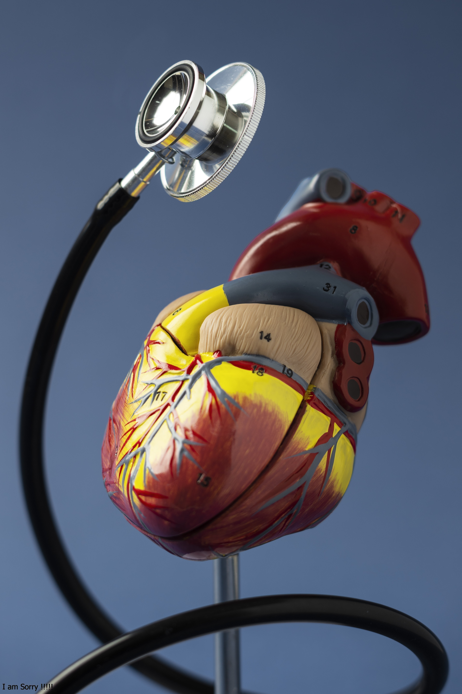

Décrivez vos symptômes, nous vous guidons vers des pistes fiables.
Recevez des conseils simples pour améliorer votre bien-être.
Vos informations restent confidentielles et ne sont jamais enregistrées.
© 2025 SympCheck - Simulation de symptômes et conseils santé.
Quelques renseignements sur des spécialistes recommandés pour vos problèmes de santé